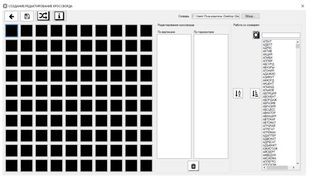

При выборе пункта меню «Редактировать кроссворд» откроется форма,
в которой надо загрузить кроссворд из файла с расширением .crwd.
Откроется форма, которая представлена, на котором можно составить кроссворд.
На этой форме администратор может сгенерировать кроссворд или создать кроссворд вручную.
Для генерации в автоматическом режиме необходимо нажать на.
При добавлении слова в ручном режиме администратор должен выделить область,
система по маске должна отфильтровать слова в словаре,
после этого администратор сможет добавить слово на сетку,
щёлкнув двойным кликом мыши на нужное слово.
Администратор может удалить слово из сетки, выделив слово и нажав кнопку.
Так же администратор может открыть новый словарь понятий и работать с ним.
